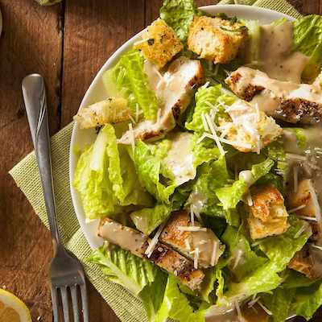

Welcome to Bistro 76!
Our hope is that when you have a meal with us, you leave feeling like family.
View Our Menu by Section
Appetizers
Bruschetta $10

Our fresh baguette, sliced and toasted, topped with locally-grown tomatoes, olive oil, fresh parmesan, garlic, and basil.
Caprese Salad $8

Locally-sourced tomatoes, mozzarella, and fresh basil from our garden, seasoned, and drizzled with balsamic vinegar.
Garlic Knots $12

We bake our garlic knots fresh throughout the day. Buttery and topped with parmesan and garlic butter, you'll want to make sure that you order enough to share.
Salads
Add chicken to any salad for $6, or add salmon for $10
Caesar $15
Fresh, crispy romaine, parmesan, homemade croutons, and our secret family dressing tossed together and served in a chilled bowl.
Antipasto $12

Handmade pasta, freshly picked tomatoes, roasted red peppers, sliced red onions, salami, and olives, tossed with our house-made mustard vinaigrette, and topped with parmesan.
Seasonal Greens $12
Fresh, local salad greens and vegetables, chopped and tossed with our house-made vinaigrette, and topped with parmesan cheese and crispy croutons.
Entrees
Lasagna $17

Mom's secret recipe is a legend for a reason. Homemade pasta, sauce, and ricotta, layered together with mozzarella and basil from our garden.
Roasted Salmon $20
We roast our fresh salmon in a cast iron pan after brushing it with melted butter, to ensure that the outside is crispy and delicious and that the inside melts in your mouth. Choose two sides from the items below with this meal.
Chicken Parmesan $20
Our chicken parmesan is paired perfectly with spaghetti and our homemade marinara sauce.
Sides
Breadsticks $5
Our breadsticks are almost as famous as our lasagna! Made fresh throughout the day, these buttery seasoned breadsticks will melt in your mouth. Served with homemade marinara sauce for dipping.
Sauteed Vegetables $5
Fresh, locally grown vegetables are selected by season, sliced, then sauteed with olive oil and a secret blend of seasonings. Ask your server which vegetables are currently in season.
Roasted Potatoes $6
Our roasted red potatoes are so delicious that you'll want to make them your meal. Tossed with olive oil and a secret blend of seasonings and fresh herbs and roasted to perfection.
Dessert
Tiramisu $10
The traditional dessert everyone loves! Our tiramisu is made fresh by mom, following her Nonna's recipe. Share a piece with your family, or order one to go!
Chocolate Lasagna $10
Finish your meal with our famous chocolate lasagna. A secret family recipe, these layers of cake, mousse, ganache, and whipped cream are a treat!
Gelato $8
A family favorite, our gelato is made in-house from fresh ingredients. Our vanilla bean gelato is always available, but seasonal flavors are created weekly. Ask your server for details.